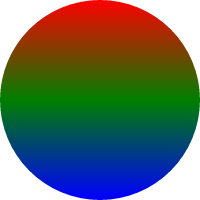
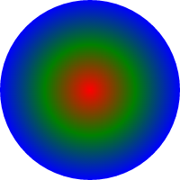

The following properties can be set on any object when creating it. This also lists their default values if they are not set.
lineWidth 5
strokeStyle "#000000"
fillStyle "#000000"
lineCap "round"
lineJoin "miter"
lineDash []
miterLimit 10
shadowColor null
shadowOffsetX 0
shadowOffsetY 0
shadowBlur 0
globalAlpha 1
translationX 0
translationY 0
shake 0
blendMode "source-over"
All of these defaults are defined on the glc.styles property. So you can change any of these globally by writing, for example:
glc.styles.lineWidth = 20;
list.addCircle({
stroke: true,
fill: false,
radius: [50, 80]
});

Now, all objects will be drawn with a line width of 20 pixels, unless they explicitly set their own lineWidth property.
Note that you can not set default animations on glc.styles, only single values. Animations are only parsed within an object's property definition.
There is one additional property on glc.styles that does not apply to individual objects:
backgroundColor "#ffffff"
This is a global style only. The backgroundColor is only used to draw the main background of the animation and is not used by objects. It is not animatable. If you want to animate the background color, just create a rect behind all the other objects and animate its color.
You can create a background color by doing something like "rgba(0, 0, 0, 0.1)". This has the result of partially covering the previous frame with black. After multiple frames, the background becomes mostly black, but you will sometimes see "trails" of moving objects. This can be used to create some great effects. Note, that the non-standard 8-digit hex string like "#80000000" cannot be used here because this value is not parsed by the GLC color parsing system.
All of the other styles do pretty much what they do in the HTML5 Canvas drawing API. The exceptions are:
- The
lineDashproperty, which is asetLineDashmethod on the 2d rendering context. translationXandtranslationY, which aretranslate(x, y)on the context.- The fact that you can specify hex colors with an alpha channel here, which you can't do directly on the 2d renering context. e.g.
"#80ff0000" - The
shakeproperty adds an adjustable jitter to any object it is applied to, randomly changing its position by a small amount on each frame. - The
blendModeproperty maps to the CanvasglobalCompositeOperationproperty. It's exactly the same. I just didn't feel the need to make you type "globalCompositeOperation" every time you need to use it.
The Color Module
Although colors are already pretty powerful in GLC, I added a color module that makes defining colors even easier. You can access this as glc.color and it is now aliased in the template to simply be color.
The color module contains several methods that return color strings that can be used for fill styles, stroke styles, shadow colors or background colors. Here are all the methods:
- color.rgb(r, g, b)
- color.rgba(r, g, b, a)
- color.gray(shade)
- color.randomRGB()
- color.randomRGB(min, max)
- color.randomGray()
- color.randomGray(min, max)
- color.num(number)
- color.hsv(h, s, v)
- color.hsva(h, s, v, a)
- color.animHSV(h, s, v)
- color.animHSVA(h, s, v, a)
- color.randomHSV(minH, maxH, minS, maxS, minV, maxV)
Some of these simply make it easier to define colors using numbers for the component channels.
fillStyle: color.rgb(255, 128, 0)
or...
fillStyle: color.rgba(255, 128, 0, 0.5)
The color.num method lets you pass in a single integer that will be converted to a color string. This is usually done with a hexadecimal based number.
fillStyle: color.num(0xff8000)
Note that the num method only supports 24-bit numbers, so no alpha channel. Which is to say that the color will always be fully opaque.
You can also easily define a grayscale color with the color.gray method. Just pass it a value from 0 to 255.
fillStyle: color.gray(128)
Then there are methods for generating random colors or grays. color.randomRGB() will return a random color with full alpha.
fillStyle: color.randomRGB()
You can also pass minimum and maximum parameters to this method. For example, the following will generate a random color where all of the components have a value between 0 and 128. This will be a darker color, whatever it winds up being.
fillStyle: color.randomRGB(0, 128)
Whereas this example will generate colors where all the components have higher values - between 128 and 255:
fillStyle: color.randomRGB(128, 255)
Then there's the color.randomGray() method. This works the same way. With no parameters, you'll get a random gray from the full spectrum of grays.
fillStyle: color.randomGray()
Or you can pass in min and max values to set a range of grays where your random one will be pulled from.
fillStyle: color.randomGray(0, 128)
Finally, there are two methods for getting HSV (hue, saturation, value) based colors. First there is color.hsv(h, s, v). Here, you pass a value from 0 to 360 for hue. This determines the base color. Then a value from 0 to 1 for saturation and 0 to 1 for value. Saturation controls how much of the base hue will be in the final color, where 1 is a fully saturated value and 0 will give you white. And value controls how dark the color is, where 1 is as bright as it can be and 0 will be black.
fillStyle: color.hsv(30, 1, 1)
There's also a version with alpha:
fillStyle: color.hsva(30, 1, 1, 0.5)
And, of course, there's a random method for hsv: color.randomHue(min, max, s, v). With this one, the min and max parameters, as well as s and v, are all required. The following will generate colors with a orange to yellow hue:
fillStyle: color.randomHSV(30, 60, 1, 1, 1, 1)
A note on animating with the color module. All of the methods discussed so far return valid color strings, so they can all be animated just as if you'd assigned any other basic string. For example:
fillStyle: [color.rgb(255, 0, 0), color.gray(128)]
And you can mix and match them with any other color strings:
fillStyle: [color.randomRGB(), "blue"]
The only caveat is on using the color.hsv method. The values you assign here will be converted to a color string - which is rgb based - BEFORE animating. So you may not get the result you're looking for when animating between two hsv-defined colors. Take the following example:
fillStyle: [color.hsv(0, 1, 1), color.hsv(360, 1, 1)]
You might expect that to animate through the full spectrum of colors, giving you a rainbow effect. That's not what you'll get though. Actually hsv(0, 1, 1) will be converted to "#ff0000". And hsv(1, 1, 1) will convert to the exact same thing. So you'll be animating from red to red - no visible animation at all.
That's what the color.animHSV method is for. This takes six values - start and end parameters for each of h, s and v, and will animate between them as you would expect.
fillStyle: color.animHSV(startH, endH, startS, endS, startV, endV)
This will recalculate a new hsv value on each frame, so it is actually animating through various hues. If you try this one, I suggest you try it in single mode, no easing, with a duration of at least 5. Otherwise, the entire spectrum will be moving by so quickly, it will just look like random flashing colors. Animating hues often works better for smaller ranges, such as a min and max of 30 and 60, which will move between an orange and a yellow color.
And, for the sake of completeness, the alpha version:
fillStyle: color.animHSVA(startH, endH, startS, endS, startV, endV, startA, endA)
For a bit more in depth discussion of the color module, check out this post.
Gradients
Gradients, even in native canvas, are complex. Creating a single gradient is complicated enough, so it was a challenge to allow for a method of animating gradients without making it any more complicated. One of the main design decisions, good or bad, in GLC was to match the native canvas drawing API as much as possible. In canvas, you create gradients by calling context.createLinearGradient() or context.createRadialGradient() and then adding colors at specific spots in the gradient by calling gradient.addColorStop(). This is well documented elsewhere on the web, so I'm not going to go into that much here.
But basically, you'll be using the same API to make gradients in GLC. The big difference is that the gradients you create in GLC will be animatable, just like everything else.
The methods for creating gradients have been added to the color module (which again is at glc.color, and aliased to simply color in the template.js file).
So, to create a linear gradient, you would say:
var gradient = color.createLinearGradient(x0, y0, x1, y1);
This creates a linear gradient that starts at point x0, y0 and goes to x1, y1. Now we need to add color stops. Say we want the color to be red at point x0, y0 and gradiently change to blue when it reaches x1, y1. We say:
var gradient = color.createLinearGradient(x0, y0, x1, y1);
gradient.addColorStop(0, "red");
gradient.addColorStop(1, "blue");
You can add as many stops as you want. Just ensure that you keep the positions in the range of 0 - 1.
var gradient = color.createLinearGradient(x0, y0, x1, y1);
gradient.addColorStop(0, "red");
gradient.addColorStop(0.5, "green");
gradient.addColorStop(1, "blue");
Now, the gradient will start at red, move through green at the midway point, and end at blue. We can then simply assign this to the fillStyle or strokeStyle property of any object we are drawing. So here's what we have:
function onGLC(glc) {
glc.loop();
glc.size(200, 200);
var list = glc.renderList,
width = glc.w,
height = glc.h,
color = glc.color;
var gradient = color.createLinearGradient(0, -100, 0, 100);
gradient.addColorStop(0, "red");
gradient.addColorStop(0.5, "green");
gradient.addColorStop(1, "blue");
list.addCircle({
x: 100,
y: 100,
radius: 100,
fillStyle: gradient
});
}
Here, the gradient goes from point 0, -100 to point 0, 100. This is relative to the center of the circle we are drawing. Since the circle has a radius of 100, the gradient will go from the top of the circle to the bottom. And here's what this gives us:
The center of the object distinction is unique to GLC. In native canvas, the gradient is always centered at the top left of the canvas itself. This makes calculating your gradient sizes and positions to match what you're drawing a bit tricky.
But for many of the objects in GLC the gradient is centered on the object, so things generally become a whole lot simpler.
The gradient is centered on the object for the following shapes: circle, gear, heart, oval, poly, rect, star and text. These objects all have a size and position that is known beforehand. Also, these are the objects most likely to be filled, and gradients are generally more commonly used on fills than on strokes. So this makes filling these objects with a gradient very easy.
When using gradients on other objects, such as curves, lines and paths, the gradient will most likely start at the default top left of the canvas and you'll have to work out where you want it from there, just like in native canvas. In some objects, such as the ray, the gradient will be centered on the first point of the ray. So you might need to experiment a bit to see where the gradient is actually starting and adjust it from there.
For radial gradients, the process is the same, but you'd call color.createRadialGradient(x0, y0, r0, x1, y1, r1). Again, you're specifying two points, but also two radii. Basically the gradient goes between two circles. Usually these are somewhat concentric circles, with one very small, and the other the size of your object. So we have this:
function onGLC(glc) {
glc.loop();
glc.size(200, 200);
var list = glc.renderList,
width = glc.w,
height = glc.h,
color = glc.color;
var gradient = color.createRadialGradient(0, 0, 0, 0, 0, 100);
gradient.addColorStop(0, "red");
gradient.addColorStop(0.5, "green");
gradient.addColorStop(1, "blue");
list.addCircle({
x: 100,
y: 100,
radius: 100,
fillStyle: gradient
});
}
The only difference here is that we created a radial gradient. The first point is 0, 0 with a radius of 0. The second point is also 0, 0, with a radius of 100. Color stops are the same. So we get:
Now, on to animating! A lot of work went into making this as easy as possible while still following the canvas API. In the end, all we have to do is create two gradients, and assign them as an array to fillStyle. GCL will animate between them. It will animate the points and radii of the gradients, and the positions and colors of all the color stops!
Here you go:
function onGLC(glc) {
glc.loop();
glc.size(200, 200);
var list = glc.renderList,
width = glc.w,
height = glc.h,
color = glc.color;
var gradient1 = color.createRadialGradient(0, 0, 0, 0, 0, 100);
gradient1.addColorStop(0, "red");
gradient1.addColorStop(0.5, "green");
gradient1.addColorStop(1, "blue");
var gradient2 = color.createRadialGradient(0, 0, 0, 0, 0, 100);
gradient2.addColorStop(0, "green");
gradient2.addColorStop(0.5, "blue");
gradient2.addColorStop(1, "red");
list.addCircle({
x: 100,
y: 100,
radius: 100,
fillStyle: [gradient1, gradient2]
});
}
Here, all I did was change the colors, but you could change just about anything. The result:

Now before you ask, NO, it's not possible to animate between different kinds of gradients. For example, you can't animate between a solid fill and a gradient, or between a linear and radial gradient. You could, of course, create two gradients, and have the colors all the same in one. This would, in effect, create a solid fill or stroke. But since it's really a gradient, it would animate to a different gradient.
Also, the number of color stops in the two gradients should be equal. If they aren't, some color stops might be dropped, or your computer might blow up.